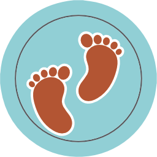

Welcome UTHealth Residents & Fellows
-
Counseling is Available 24/724 hour 365 days per year telephone crisis and urgent counseling available
-
For Our Veterans
 UTHealth values the men and women who have served and continue to serve our country. Click here to visit our page that highlights mental health, wellness and worklife balance resources for veterans and their family members.
UTHealth values the men and women who have served and continue to serve our country. Click here to visit our page that highlights mental health, wellness and worklife balance resources for veterans and their family members. -
Family AssistanceGet referrals for great babysitters, nursing homes and more. We can you assist in making those tough decisions so you can stress less at work.
-
Nursing Rooms in UTHealthThere are 9 UTHealth buildings that provide nursing mother rooms. Click here to download the wellness map and find your nearest location.
-
Legal & Financial Referrals
Latest Wellness News
-
-
Wellness Spotlight on Anthony Garcia
It was the last week of January 2016 and Anthony Garcia had just returned from Las Vegas where he and his wife celebrated their 20th wedding anniversary. As he ... -
UT System 2nd annual ‘Family Cookbook’
The 2016 UT System Family Cookbook is here! The UT System Health and Wellness Program would like to thank all those from UTHealth who shared their family recipes ...
-
- More Wellness Stories